branch_001 extra
gt=— err=— z=1643.55 r=1.6348
- vesselness 0.4132
- radius_cv 0.7039
- circularity 0.7009
- path_mm 14.0
- mean_HU 437.0
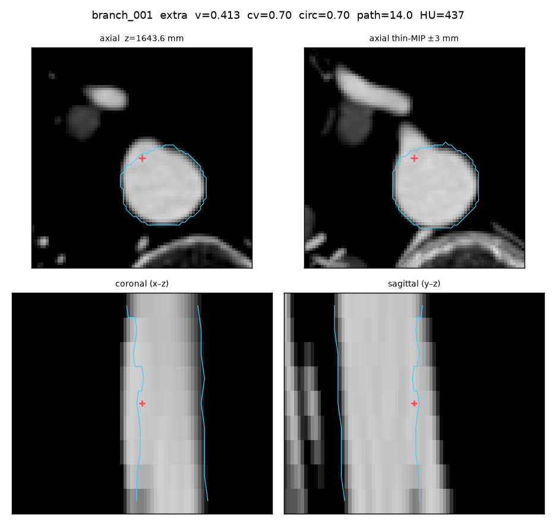
gt=— err=— z=1643.55 r=1.6348

gt=— err=— z=1629.08 r=1.9714
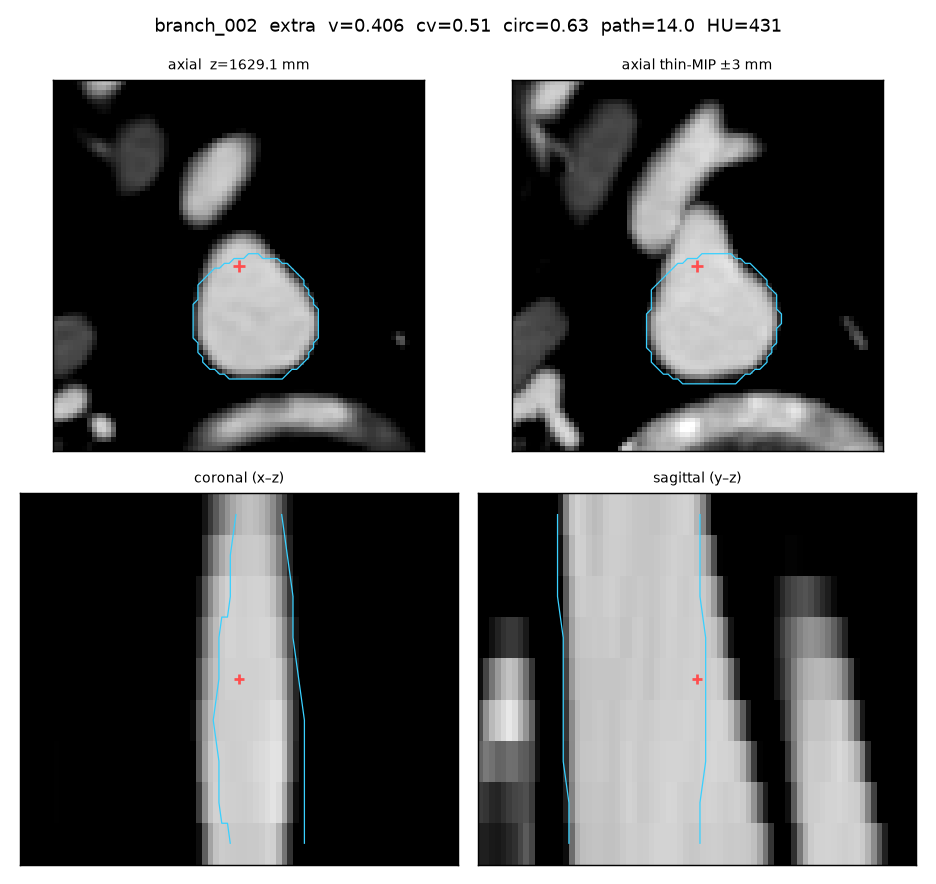
gt=— err=— z=1613.3 r=1.6319
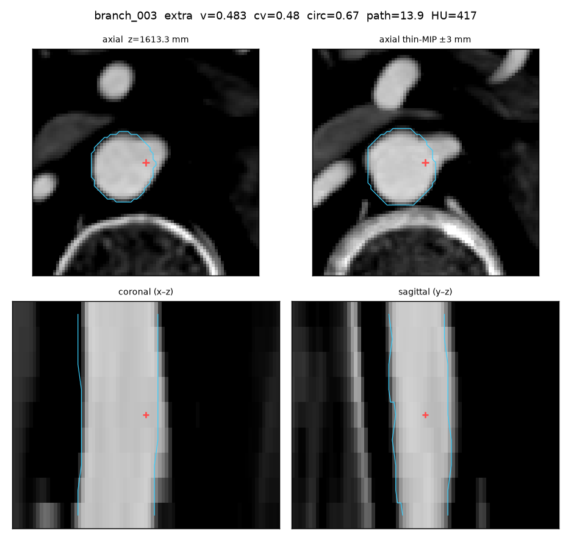
gt=— err=— z=1607.45 r=2.1275
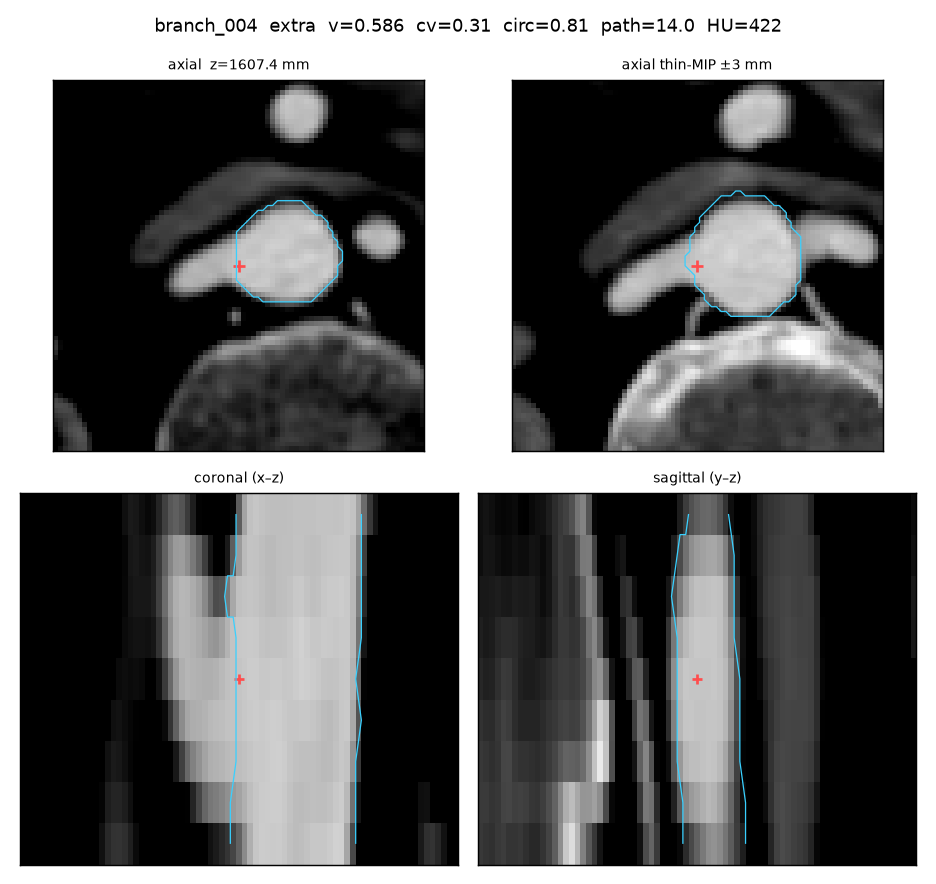
gt=— err=— z=1601.82 r=1.262
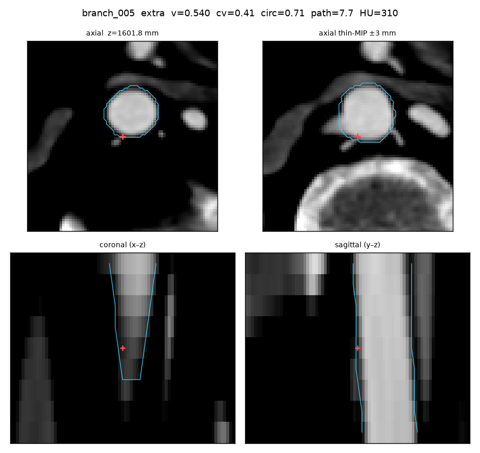
gt=— err=— z=1597.38 r=1.096
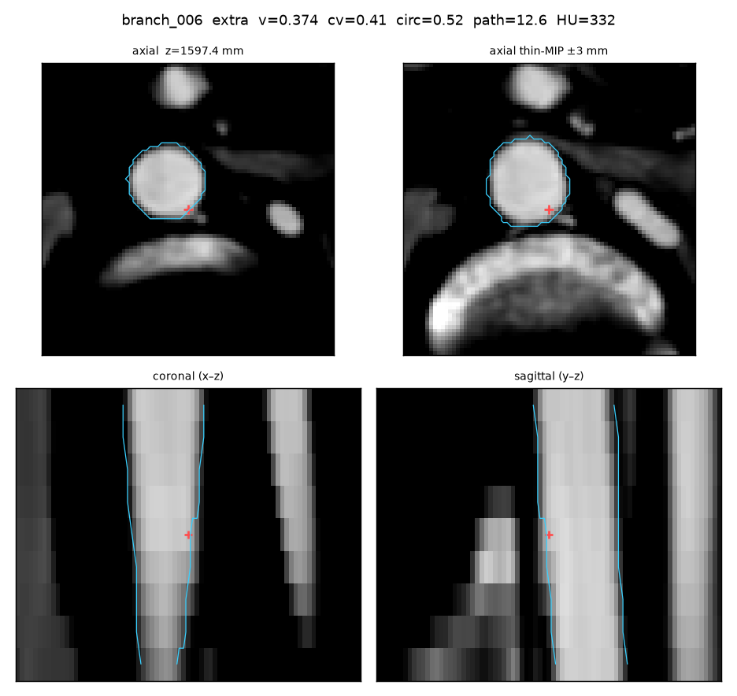
gt=— err=— z=1570.22 r=0.9543
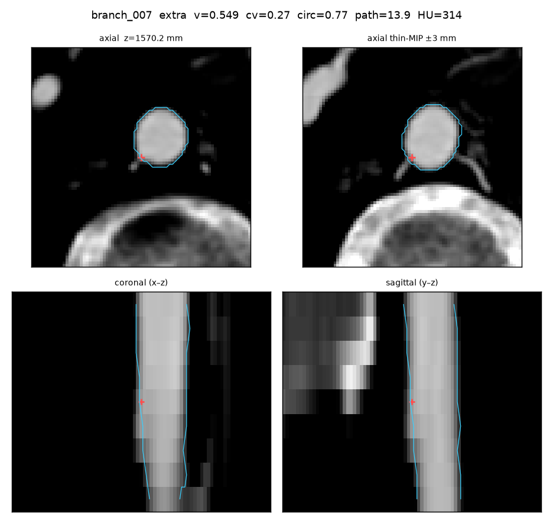
gt=— err=— z=1565.17 r=0.8906
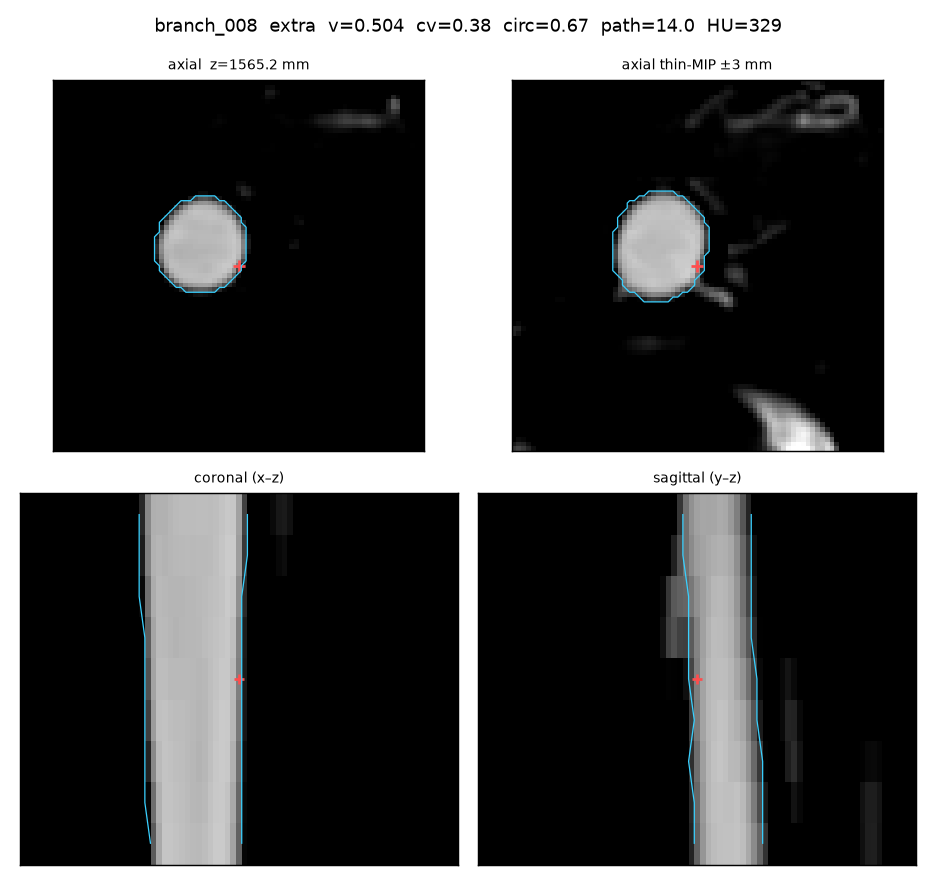
gt=— err=— z=1553.38 r=1.0232
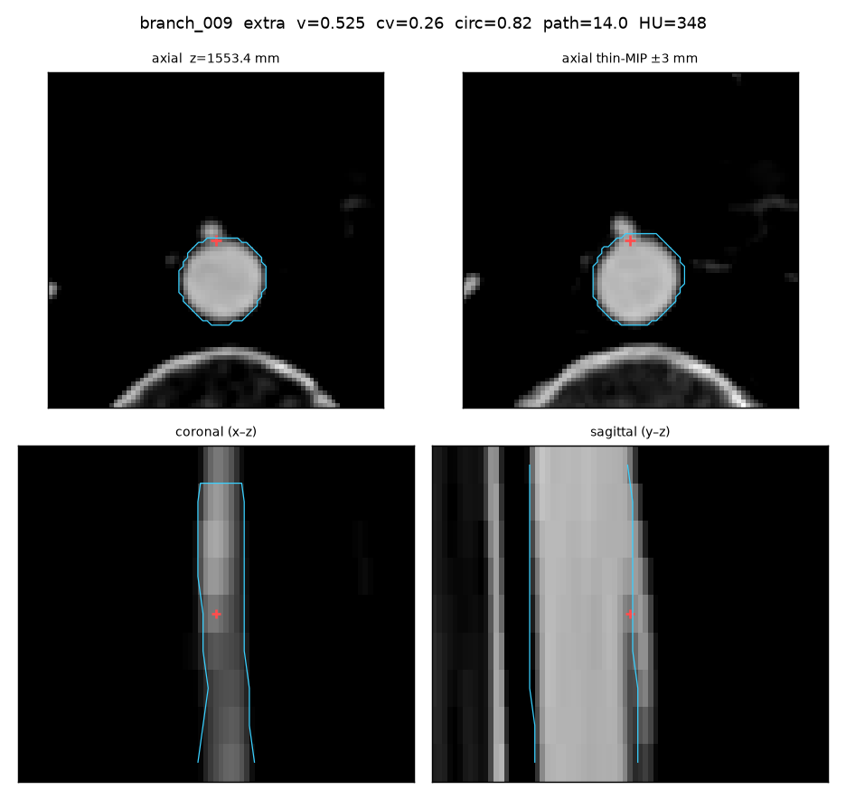
gt=— err=— z=1541.49 r=1.4311
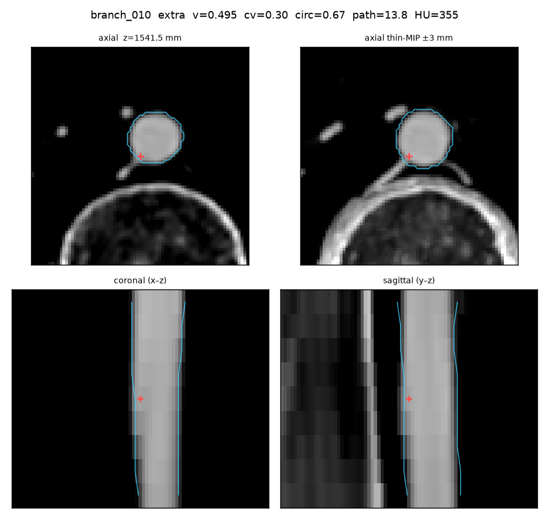
gt=— err=— z=1518.12 r=1.0708
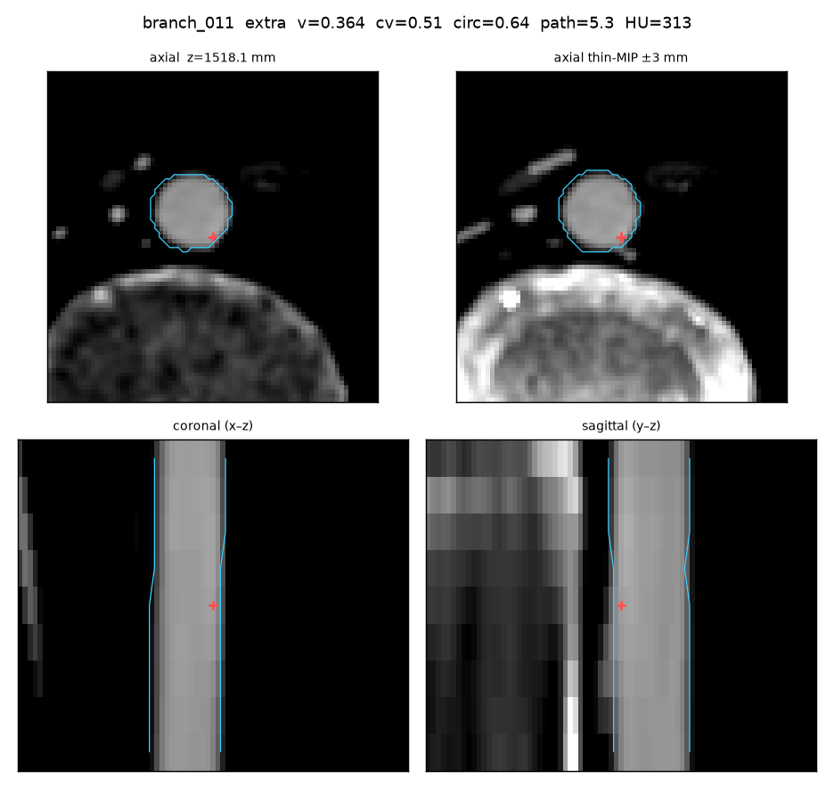